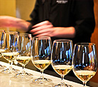

Engaging and experiential, the event will be a place where attendees create memory keepsakes owing to the exciting activities planned. With a paintbrush in one hand and wine in another, attendees can channel their creativity while sipping on their favourite wines at the Wine & Painting stall. A beer lover’s haven, the Beer Arade will resemble an authentic arcade with foosball, beer pong, flip-a-cup, and much more. Attendees can sip and savour the finest wines at the Wine Tasting Zone while a DIY Sangria bar with a variety of garnishes, berries, juices and more will enable guests to create the concoction of their dreams.
More 
Beer brands on board for the festival include labels like Simba, Bira, Corona, Hoegaarden, Kati Patang, Beeyoung and many more in the pipeline. The event will see a wonderful wine selection ranging from international fine wines such as Martini, Camas and Senorita, from across the globe (Australia, Italy, Spain, France and America) along with several homegrown labels. Trending now, Tilt by Fratelli will also be served at Toast along with Sake from Hakushika & Hakutsuru flown in straight from Japan- leaving patrons spoiled for choice.
To provide respite from a day doused in drinks, the festival will also see gastronomical delights to devour- housing stalls from the choicest of eateries such as AKU's, The Brrgrr Co., Plats, Tenali Kitchen, Tiella, Koyla Kebab, My Love Triangle and more!
After the success of India Cocktail Week, WMS entertainment and Passcode Hospitality are pleased to announce the launch of TOAST - A fun-filled 2 Day festival featuring the finest international and homegrown wine and beer brands, delectable restaurant pop-ups, incredible musical performances, tasting sessions and much more.
More